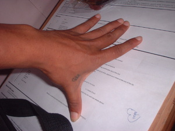

dangew 
/daŋɔw/
n.
“hand_span”
n.
a hand span (about 8 in.)
Daruwa rè ne dangew ka lulud ku su malepet ema ne etew.
My foot is only two hand span for I dwarf man.
Wrd.Gloss: hand_span
Cult. The distance from the tip of the thumb to the tip of the middle finger extended
Eng. hand span; measurement; span; measure
Tag. dangkál
Ceb. dángaw
Ilo.: dángan
Binukid: dangaw
Sarangani: dangaw
Tasaday: dangaw
Tigwanon: dangew
Dibabawon: dangew
Obo: dangew
WBM: rangew
Ilianen: rangew
Proto: dangaw
OCM: Weights and Measures (804)
Idiom: daruwa ne dangew
—foot, 12 inches
Online dict status: -
Usage level: M
v.
(egdangew) hand span
Ka seini iyan sika se egseked te sabeke ne butang pinaahi te belad gamit ka me kemel.
Sukura nu pa sika pinaahi te dangew nu.
Measure that using your hand span.
Eng. hand span; span
Online dict status: -
Usage level: B
Updated by: RJH,AAA,AAA
Last updated: 25/Sep/2017
"dangew" in text "Making Lead Sinkers"
This page last updated: 03-Jan-2020
Copyright © 2009-2014, Matigsalug Language Christian Association, Inc